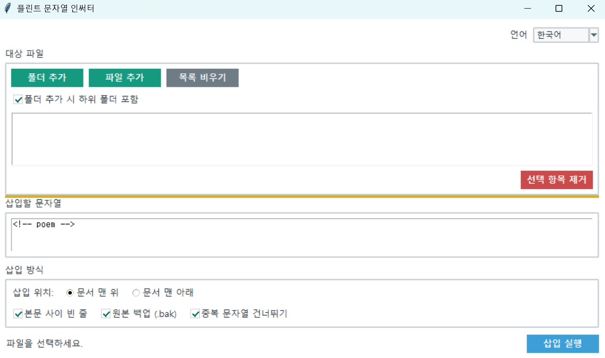

Flint Text Inserter
Version: 1.0.0
Flint Text Inserter
A tool for inserting the same string at the beginning or end of multiple text files at once.
It can be used to batch-add classification comments such as <!-- poem --> to Markdown documents, or to add fixed headers and footers across multiple files.
How to Use
- Click
Add Filesto select files directly, orAdd Folderto select a folder. - When a folder is selected, supported files are found recursively in its subfolders and added to the list.
- Enter the
string to insert. - Select
Top of DocumentorBottom of Document. - Check the blank line, backup, and duplicate prevention options.
- Click
Run Insertion.
Example:
```md id="r8p3vk"
A Heart Become the Wind
### Key Features
* Batch insertion of the same string into multiple files
* Insert at the beginning or end of a document
* Add all supported files from a folder
* Recursive subfolder search
* Configurable blank lines between the inserted string and document content
* Automatically skips files that already contain the same string
* Supports UTF-8, CP949, and EUC-KR encodings
* Preserves the original line-ending format
* Automatic backup of original files
Supported extensions:
```text id="h4x7qn"
.txt .md .markdown .html .htm .css .js .py .json .yml .yaml
Run:
bash id="c2m9fs"
python inserter.py
Note:If you are using the executable (EXE) version, you do not need to run thepythoncommand.